| 日付 | 2019年9月15日（日） |
|---|---|
| 山域 | 八ヶ岳 |
| メンバー | 家族（妻、長女・8歳、長男・6歳） |
| アクセス | 車 |
| ルート (Map) | 三城いこいの広場駐車場 (9:29) - (10:01) 広小場 - (10:58) 展望台 - (11:19) 茶臼山分岐 - (12:07) 茶臼山 (12:44) - (13:57) 広小場 - (14:37) 三城いこいの広場駐車場 |
美ヶ原は観光気分でのんびり歩ける山だが、下から登る道もいくつか存在する。
一度、美ヶ原を下から「登って」みたいと思っていた。
今回は三城いこいの広場から美ヶ原を目指す。
王ヶ頭は過去2回行っているため今回はスキップし、南の茶臼山を目指すことにする。
三城いこいの広場駐車場に車を停める。標高1420m。
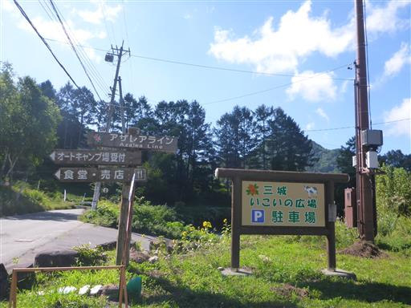
駐車場のすぐ側から登山道は始まる。
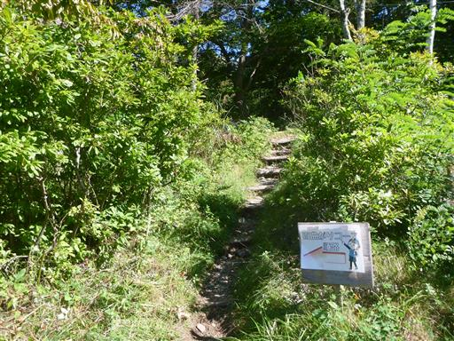
オートキャンプ場を抜けていく。3連休の中日のため、キャンプ場は賑わっている。

キャンプ場を抜けたら本格的な登山道になる。
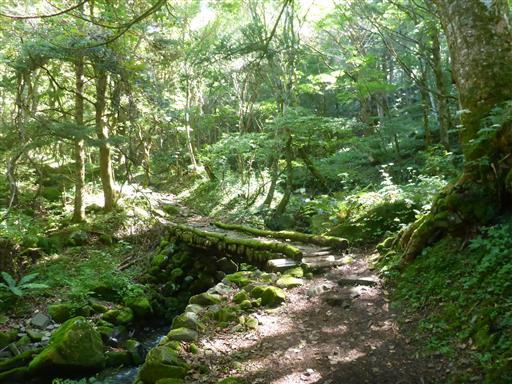
しばらくは沢沿いの道を登って行く。水の音が心地よい。
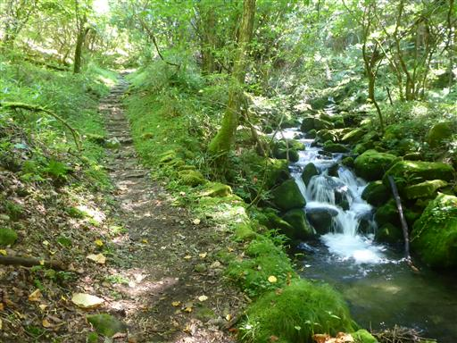
しばらく歩くと広小場に到着する。
ここは登山道の分岐点で、ここから周回コースを歩く予定だ。
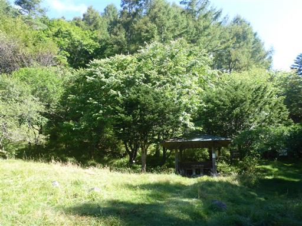
沢に手を付ける。ものすごく冷たい水で10秒もつけていると手が痛くなってくる。
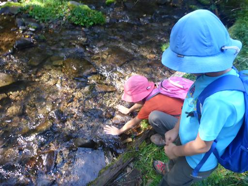
ここからは百曲コース。登山道の名前や地図を見た感じから、どんな急登かと思ったら、
緩やかな登りが続く非常に歩きやすい道だ。
ただジグザグが多いので、なかなか高度が上がらない。
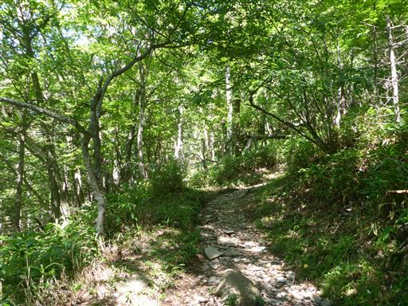
ところどころでケルンが積まれている。
平たい石がやたら多いので、ケルンを作りやすいのだろう。
これらの平たい石は、美ヶ原が火山だった時の名残なのだろうか？
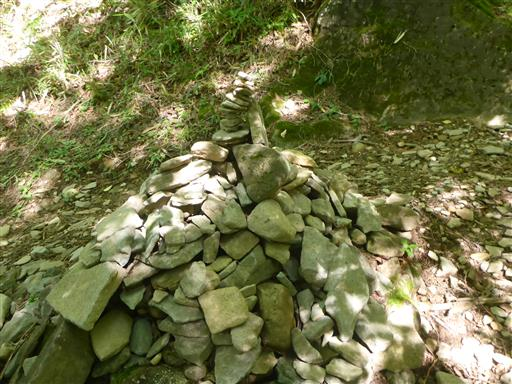
途中、登山道が水浸しになっていて何事かと思ったら、
登山道の脇から水が湧き出している。
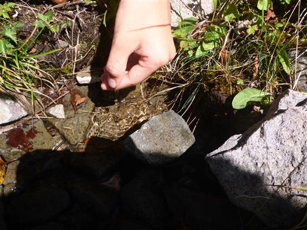
標高を上げると木が少なくなってきて、空が広くなってくる。
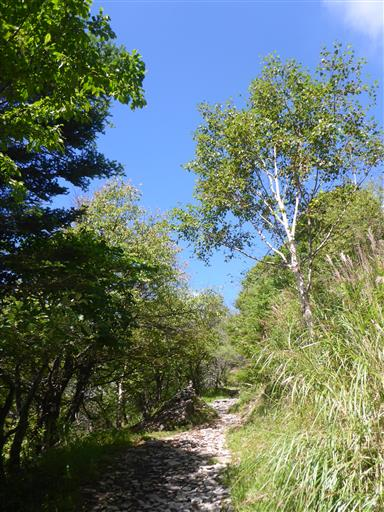
西側の展望が広がる。見えているのはかつて登った鉢伏山だ。
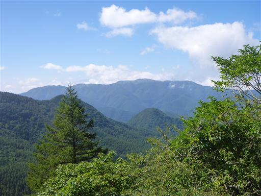
立派な触角のキリギリスを発見。バッタとトンボはあちらこちらにいる。
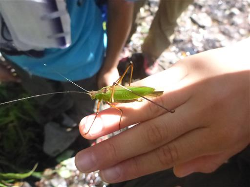
山頂部の岩壁が見えてきた。
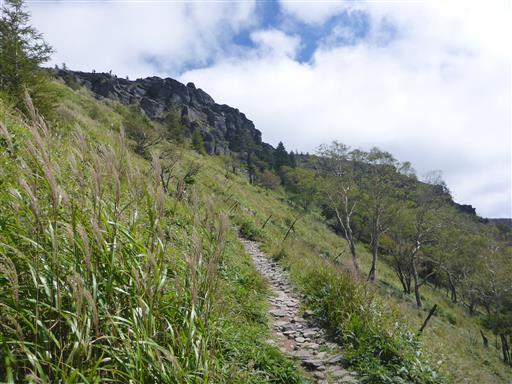
木はさらに疎らになり、涼しい風が吹き抜ける。
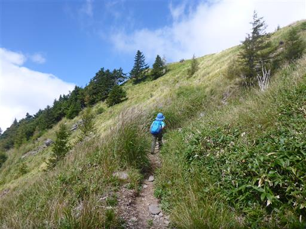
高原台地上に到着。早速人が集まっている岩場の展望台に向かってみる。
背景はこれから向かう茶臼山だ。
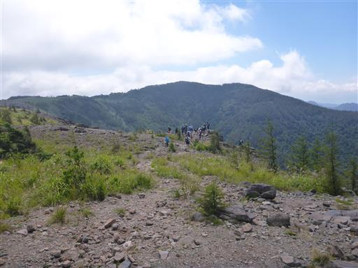
岩場からの展望。
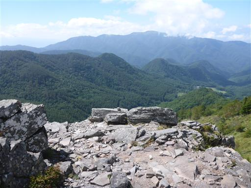
王ヶ頭方面。ここはちょっと標高が低いので、ここからだと広い牧場は見渡せない。
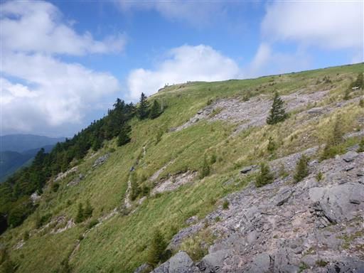
茶臼山方面。岩壁が連なっている。
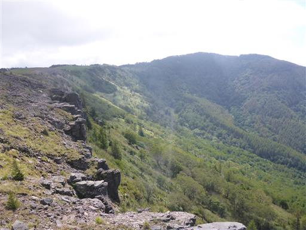
この辺りの岩は薄い岩が積み重なった独特の形だ。
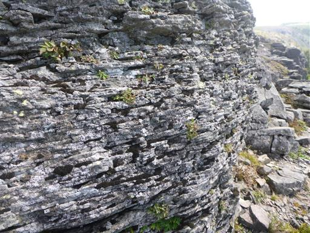
高原台地上をのんびり歩く。牛がたくさん放牧されている。
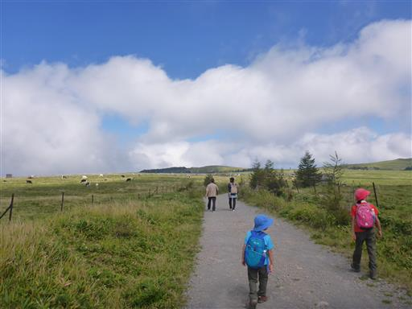
王ヶ頭の姿も眺める。本日のテーマは静かな登山。
3連休の中日で大賑わいの塩くれ場までは行かずに、茶臼山を目指す。
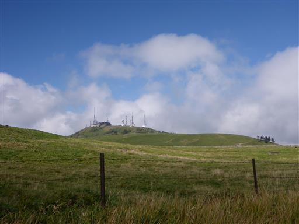
ここから牧場の中に入る。牧場の中の道は一度歩いてみたかった道だ。
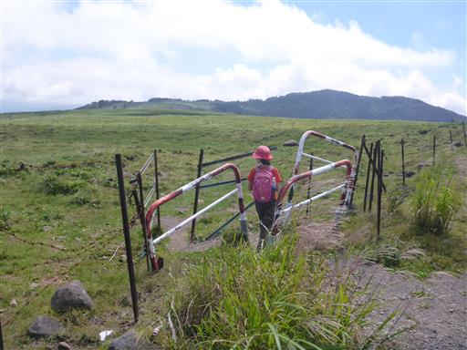
広々とした牧場。一応一本の踏み跡があり、その上を歩いていく。
残念ながら登山道の側に牛の姿は一頭も見られない。
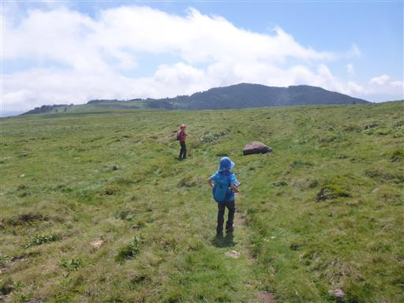
それでもあちらこちらに牛の糞は落ちている。
人がいないときはこの辺りにも牛は来るのだろう。
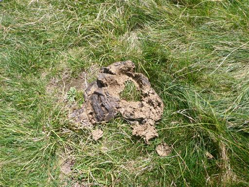
ハクサンフウロの花があちらこちらに咲いている。
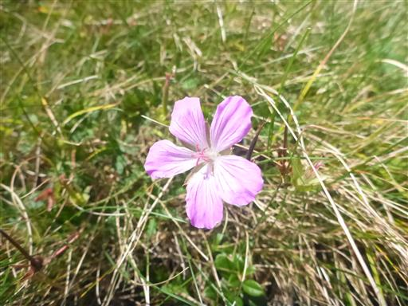
こちらはウメバチソウ。
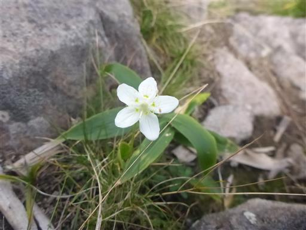
とにかく気持ちの良い牧場歩き。
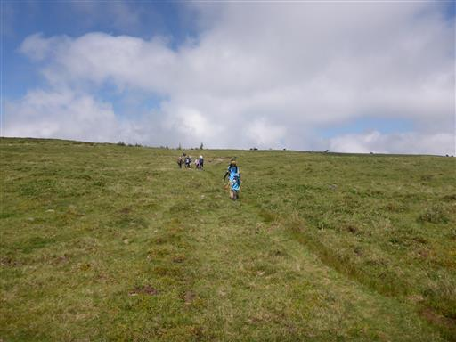
それでも糞を踏まないように、気を付ける必要がある。油断は禁物だ。
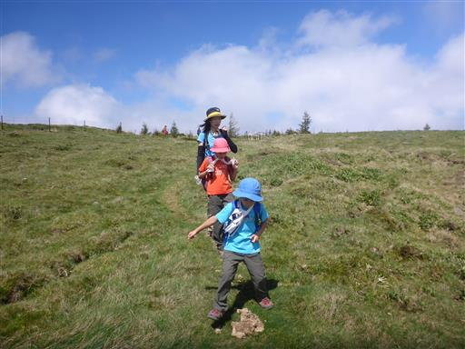
まるで牛の舌の様な形の石が落ちている。
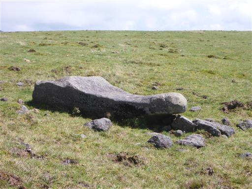
振り返ると、雲が増えてきて王ヶ頭が隠れてしまった。
残念ながら天気は下り坂だ。
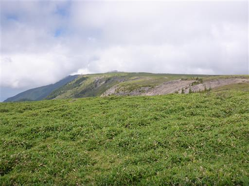
牧場の終点に到着。娘はうっかり糞を踏んでしまい、ものすごく機嫌が悪い。
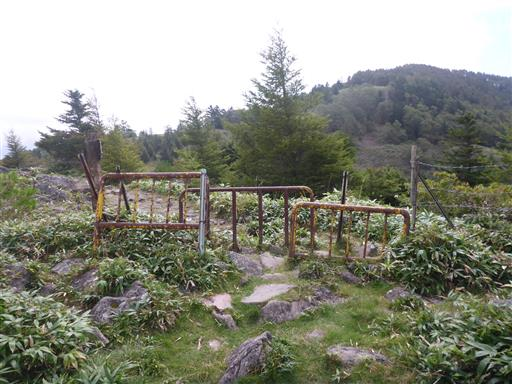
この辺りは美しい笹原が広がっている。
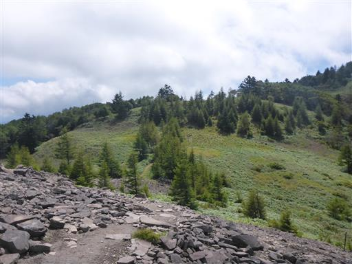
茶臼山との鞍部。ここから一登りで山頂だ。
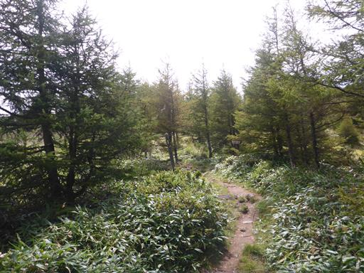
茶臼山の山頂に到着。標高2006m。

ここからは八ヶ岳や霧ヶ峰が見渡せるはずだが、ほとんどが雲に隠れてしまった。
ここで昼食休憩をとる。
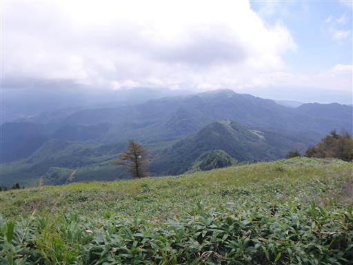
下山は、茶臼山から直接下る道を歩く。周囲は針葉樹林帯だ。
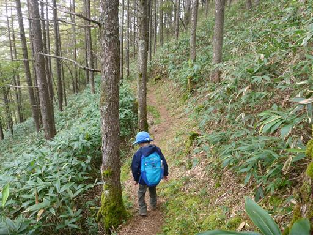
この辺りは苔が豊富。登山道も周囲も苔だらけだ。
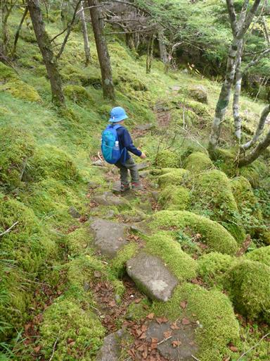
これは何者だろうか？苔かシダか…
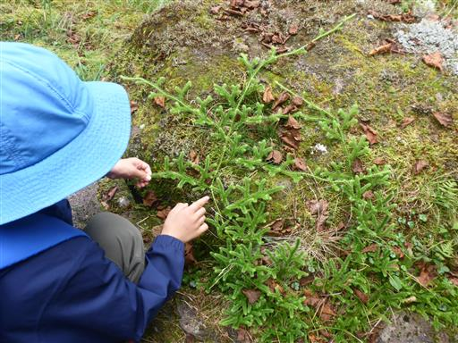
周囲にはシダもたくさん見られる。
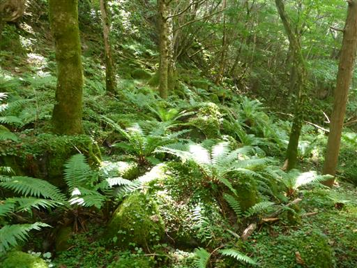
東屋を通過。屋根に植物が育っている。
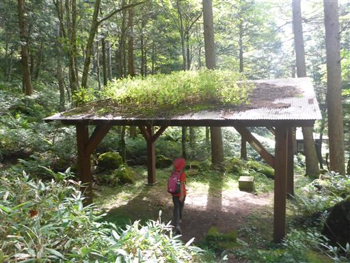
三城いこいの広場に無事下山。売店でソフトクリームを買って一休憩。
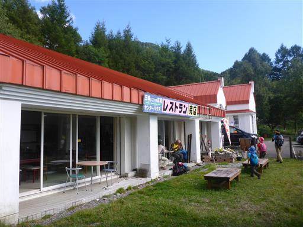
見上げると再び空は晴れ渡り、王ヶ頭の姿が見えている。
下山したら晴れるのは、登山あるあるだ。
思ったほど天気は晴れなかったが、牧場の中の登山道は素晴らしく
静かな美ヶ原を満喫できた。
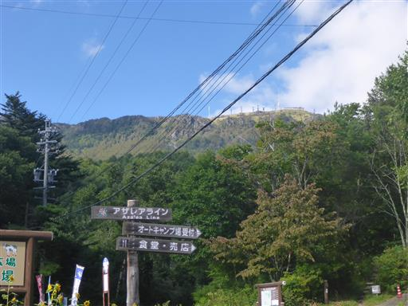